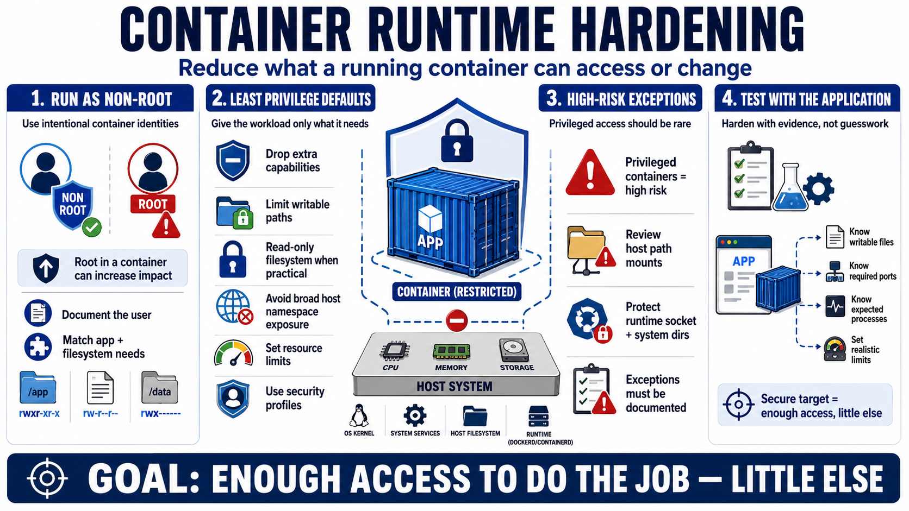

Runtime Hardening and Least Privilege
Connecting to LMS... Progress: in progress

Narration
Runtime hardening is about reducing what a container can access or change when it runs. A practical starting point is running as a non-root user where possible, because root inside a container can increase impact when paired with weak runtime configuration or host exposure. Container user identity should be intentional, documented, and compatible with the application’s filesystem and process needs.
Least privilege also means dropping unnecessary capabilities, limiting writable paths, using read-only filesystem concepts when practical, and avoiding broad host namespace exposure. Security profiles at a high level can restrict system behavior. Resource limits help reduce the impact of runaway or abusive workloads on shared infrastructure. These controls are most useful when they become defaults rather than special hardening applied only to a few workloads.
Privileged containers are high-risk because they may grant broad access to host-level capabilities or sensitive system functions. Host path mounts also require care. Mounting the container runtime socket, system directories, or sensitive host paths can blur the boundary between container and host. Some workloads legitimately need deeper host access, but those exceptions should be rare, documented, and reviewed.
Hardening should be tested with the application, not guessed into place at the end. Teams need to know which files must be writable, which ports are needed, which processes are expected, which capabilities are required, and what resource limits are realistic. The secure target is not an unusable container. It is a container that has enough access to perform its purpose and little else.